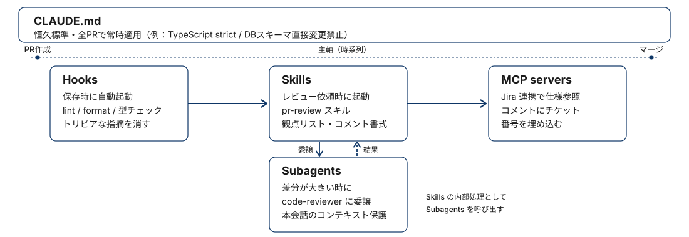
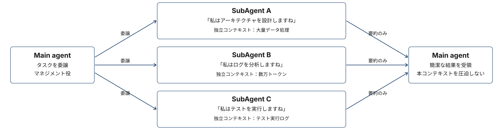
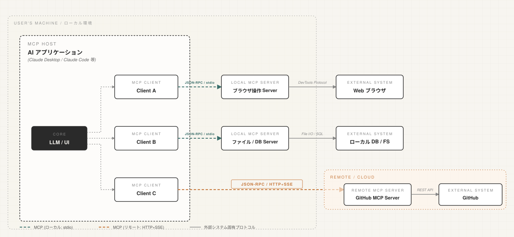

claude-code 101
2026年04月30日
regmonkey_index:
title_fontsize: 1.1em
bullet_fontsize: 0.9em
children:
- title: 1. 5つの機能の全体像
description:
- Claude Codeのカスタマイズ手段は <strong>5種類</strong>．それぞれが固有の専門領域を持つ
- 1機能に詰め込まず，<strong>適材適所で組み合わせる</strong>のが基本
width: [40, 60]
- title: 2. Skills vs CLAUDE.md
description:
- CLAUDE.mdは<strong>常時ロード</strong>．プロジェクト共通の恒久ルール向け
- Skillsは<strong>オンデマンド</strong>．タスク特有の専門知識を必要時のみ
width: [40, 60]
- title: 3. Skills vs Subagents
description:
- Skillsは<strong>現セッションに知識を追加</strong>．推論をその場で補強する
- Subagentsは<strong>別コンテキストで委譲</strong>．独立した作業として隔離
width: [40, 60]
- title: 4. Skills vs Hooks
description:
- Skillsは<strong>リクエスト駆動</strong>．依頼内容に応じて起動
- Hooksは<strong>イベント駆動</strong>．ファイル保存・ツール呼び出しで発火
width: [40, 60]
- title: 5. Skills vs MCP servers
description:
- Skillsは<strong>指示・手順の知識</strong>を与える
- MCPは<strong>外部ツール・統合</strong>を提供
width: [40, 60]5つの機能の全体像
Skills vs CLAUDE.md
Skills vs Subagents
Skills vs Hooks
Skills vs MCP servers
1機能に詰め込まず，常時ロード・オンデマンド・隔離実行・イベント駆動・外部統合を適材適所で配置する
regmonkey_abstract_summary:
title_fontsize: 1.2em
bullet_fontsize: 1.0em
children:
- title: CLAUDE.md
description:
- <strong>常時ロード</strong>．全セッションの冒頭に必ず読み込まれる
- プロジェクト共通の<strong>恒久ルール</strong>（標準・制約・スタイル）を置く
width: [25, 75]
- title: Skills
description:
- <strong>オンデマンドロード</strong>．リクエストにマッチしたときだけセッションに合流
- タスク特有の<strong>専門知識・手順</strong>を必要時に注入する
width: [25, 75]
- title: Subagents
description:
- <strong>隔離コンテキスト</strong>で作業を委譲し，結果だけ回収する
- 別ツール権限・並列実行・本セッションの<strong>コンテキスト保護</strong>に有効
width: [25, 75]
- title: Hooks
description:
- <strong>イベント駆動</strong>．ファイル保存・ツール呼び出しの前後で自動発火
- lint/format・事前検証など「毎回走らせたい」副作用を仕込む
width: [25, 75]
- title: MCP servers
description:
- <strong>外部ツール・統合</strong>を Claude に接続する：使える道具を増やす
- Jira・Slack・社内DB等への API 接続，標準ツールにない追加機能
width: [25, 75]判断の3原則
具体例：PR レビュー支援フローでの5機能の役割分担

5つの機能の全体像
Skills vs CLAUDE.md
Skills vs Subagents
Skills vs Hooks
Skills vs MCP servers
全セッション共通ルールはCLAUDE.mdへ．セッションに応じた必要専門知識はSkillsに分離
ロードのタイミングが本質的な違い
CLAUDE.md を使う場面
Tips
Skills を使う場面
5つの機能の全体像
Skills vs CLAUDE.md
Skills vs Subagents
Skills vs Hooks
Skills vs MCP servers
Skillsは推論をその場で強化．Subagentsは作業を委譲して結果だけを受け渡す
コンテキストの扱いが本質的な違い
Subagents を使う場面
REMARKS
Skills を使う場面
親はタスクを委譲し，サブエージェントが独立コンテキストで作業．本コンテキストには要約だけが返る

もしSubAgentsがなかったら
5つの機能の全体像
Skills vs CLAUDE.md
Skills vs Subagents
Skills vs Hooks
Skills vs MCP servers
何を依頼されたかで動くのがSkills．何が起きたかで動くのがHooks．発火条件のレイヤーが違う
起動トリガーが本質的な違い
Hooks を使う場面
Skills を使う場面
REMARKS
record1:
Hook名: SessionStart
タイミング: セッション開始時・再開時
Block: ×
主な用途: 開発コンテキスト（Issue・最近の変更など）の読み込み、環境変数のセットアップ
record2:
Hook名: Setup
タイミング: <code>--init-only</code> または <code>-p</code> モードで <code>--init</code> / <code>--maintenance</code> 起動時
Block: ×
主な用途: CIやスクリプトから明示的にトリガーする一回限りの依存関係インストール・スケジュールクリーンアップ
record3:
Hook名: UserPromptSubmit
タイミング: ユーザがプロンプトを送信し、Claudeが処理する前
Block: ○
主な用途: プロンプトに基づくコンテキスト追加・プロンプトの検証・特定種類のプロンプトのブロック
record4:
Hook名: UserPromptExpansion
タイミング: スラッシュコマンドがプロンプトに展開され、Claudeに届く前
Block: ○
主な用途: 特定コマンドの直接呼び出しブロック・スキル用コンテキスト注入・コマンド利用ログ
record5:
Hook名: SessionEnd
タイミング: セッションが終了したとき
Block: ×
主な用途: セッション終了ログ・後処理record1:
Hook名: PreToolUse
タイミング: Claudeがツールパラメータを生成した後、ツール呼び出しの処理前
Block: ○
主な用途: 危険コマンドのブロック・ツール入力の修正・許可/拒否/確認の制御
record2:
Hook名: PermissionRequest
タイミング: 権限ダイアログが表示されるとき
Block: ○
主な用途: ユーザの代わりに権限を自動承認・拒否、カスタムロジックによるツール権限制御
record3:
Hook名: PermissionDenied
タイミング: auto modeのclassifierがツール呼び出しを拒否したとき
Block: ×
主な用途: 拒否ログ記録・設定調整・モデルへのリトライ指示
record4:
Hook名: PostToolUse
タイミング: ツールが正常に完了した直後
Block: ×
主な用途: ファイル自動フォーマット・ツール出力の置換・Claudeへのフィードバック追加
record5:
Hook名: PostToolUseFailure
タイミング: ツール実行が失敗したとき
Block: ×
主な用途: 失敗ログ・アラート送信・Claudeへの修正フィードバック
record6:
Hook名: PostToolBatch
タイミング: 並列ツール呼び出しのバッチ全体が解決した後、次のモデル呼び出し前
Block: ○
主な用途: バッチ単位でのコンテキスト注入・エージェントループの停止record1:
Hook名: Notification
タイミング: Claude Codeが通知を送るとき
Block: ×
主な用途: 外部サービス（Slack・デスクトップ通知など）への通知転送
record2:
Hook名: SubagentStart
タイミング: Agentツール経由で SubAgent が起動したとき
Block: ×
主な用途: SubAgent へのコンテキスト注入・起動ログ
record3:
Hook名: SubagentStop
タイミング: SubAgent が応答を終えたとき
Block: ○
主な用途: SubAgent の停止防止・結果の検証
record4:
Hook名: TaskCreated
タイミング: TaskCreateツール経由でタスクが作成されるとき
Block: ○
主な用途: 命名規則の強制・タスク説明の必須化・特定タスクの作成防止
record5:
Hook名: TaskCompleted
タイミング: タスクが完了としてマークされるとき
Block: ○
主な用途: テスト・lint通過などの完了基準の強制
record6:
Hook名: Stop
タイミング: Main agent が応答を終えたとき
Block: ○
主な用途: 停止前の品質ゲート・デスクトップ通知・タスク完了確認
record7:
Hook名: StopFailure
タイミング: APIエラーで応答が終わったとき
Block: ×
主な用途: レート制限・認証エラーなどの失敗ログ・アラート・リカバリ
record8:
Hook名: TeammateIdle
タイミング: Agent Teamのチームメイトがアイドルに移行する直前
Block: ○
主な用途: アイドル前の品質ゲート（lint、ビルド成果物の確認など）record1:
Hook名: InstructionsLoaded
タイミング: <code>CLAUDE.md</code> や <code>.claude/rules/*.md</code> がコンテキストに読み込まれたとき
Block: ×
主な用途: 監査ログ・コンプライアンス追跡・観測性
record2:
Hook名: ConfigChange
タイミング: セッション中に設定ファイルが変更されたとき
Block: ○
主な用途: 設定変更の検証・不正な変更のブロック
record3:
Hook名: CwdChanged
タイミング: 作業ディレクトリが変わったとき（<code>cd</code> コマンド実行時など）
Block: ×
主な用途: direnvなどによるリアクティブな環境管理
record4:
Hook名: FileChanged
タイミング: 監視対象ファイルがディスク上で変更されたとき
Block: ×
主な用途: ファイル変更の検知・環境再読み込み
record5:
Hook名: WorktreeCreate
タイミング: worktree作成時
Block: ○
主な用途: デフォルトのgit動作を置き換えるカスタムworktree作成
record6:
Hook名: WorktreeRemove
タイミング: セッション終了時や SubAgent 完了時にworktreeが削除されるとき
Block: ×
主な用途: worktreeクリーンアップ
record7:
Hook名: PreCompact
タイミング: コンテキスト圧縮前
Block: ○
主な用途: 圧縮前のバックアップ・圧縮の防止
record8:
Hook名: PostCompact
タイミング: コンテキスト圧縮の完了後
Block: ×
主な用途: 圧縮後の状態ログ
record9:
Hook名: Elicitation
タイミング: MCPサーバがツール呼び出し中にユーザ入力を要求したとき
Block: ○
主な用途: MCPのelicitationリクエストのインターセプト・自動応答
record10:
Hook名: ElicitationResult
タイミング: ユーザがMCPのelicitationに応答した後、サーバへ返却される前
Block: ○
主な用途: ユーザ応答の上書き・修正Hook コマンドの exit code が，Claude Code の次の挙動（続行・ブロック・無視）を決める
record1:
Exit code: 0
意味:
- 成功（処理続行）
挙動・効果:
- stdout の JSON output フィールドを解釈．<span class="regmonkey-bold">JSON は exit 0 のときだけ処理される</span>
- 多くのイベントでは stdout はデバッグログのみに書かれ，transcript には出ない
- 例外：<code>UserPromptSubmit</code>・<code>UserPromptExpansion</code>・<code>SessionStart</code> は stdout が <span class="regmonkey-bold">Claude のコンテキストとして読み込まれ</span>，モデルが見て応答に反映できる
record2:
Exit code: 2
意味:
- ブロッキングエラー
挙動・効果:
- stdout（JSON も含めて）は<span class="regmonkey-bold">無視される</span>
- stderr の内容が Claude にエラーメッセージとしてフィードバックされる
- イベント別効果：<code>PreToolUse</code> はツール呼び出しをブロック，<code>UserPromptSubmit</code> はプロンプトを拒否，等
record3:
Exit code: その他
意味:
- 非ブロッキングエラー
挙動・効果:
- transcript に「<code><hook name> hook error</code>」通知＋stderr の1行目が表示される（<code>--debug</code> なしで原因確認できる）
- 実行は<span class="regmonkey-bold">継続</span>される（ブロックしない）
- 完全な stderr はデバッグログに記録される5つの機能の全体像
Skills vs CLAUDE.md
Skills vs Subagents
Skills vs Hooks
Skills vs MCP servers
SkillsはClaudeに「どう振る舞うか」を教える．MCPは「使える道具」を増やす．
提供するものが本質的に異なる
MCP servers を使う場面
Skills を使う場面

record1:
category: CLAUDE.md
rule:
- <span class="regmonkey-bold">常時ロード</span>．プロジェクト共通の恒久ルールを置く
actions:
- 全セッションに必ず適用される標準・制約・スタイルを記述
- セッションによって不要になる詳細は <code>Skills</code> に逃がす
record2:
category: Skills
rule:
- <span class="regmonkey-bold">オンデマンドロード</span>．タスク特有の専門知識を必要時に注入する
actions:
- PRレビュー・スライド作成など「特定タスク向け」の手順を整理
- description で発火条件を明示しマッチしたときだけセッションに合流
- 全セッションに常駐させると邪魔な詳細・チェックリストはここに置く
record3:
category: Subagents
rule:
- <span class="regmonkey-bold">隔離コンテキスト</span>で作業を委譲し結果だけ受け取る
actions:
- 広範な検索・調査・並列タスクを別コンテキストで実行
- 委譲作業に異なるツール権限を与えたいときに有効
- 本セッションのコンテキストを汚さず結果のみ回収する
record4:
category: Hooks
rule:
- <span class="regmonkey-bold">イベント駆動</span>．ファイル保存・ツール呼び出しで自動発火
actions:
- 保存時のlint・formatなど「毎回走らせたい」処理を自動化
- 特定ツール呼び出し前の事前検証・ガードレール
- Claudeの行動に対する自動の副作用を仕込む
record5:
category: MCP<br>servers
rule:
- <span class="regmonkey-bold">外部ツール・統合</span>を提供．Skillsとは異なるカテゴリ
actions:
- Jira・Slack・社内DBなど外部システムへの接続
- 標準にない追加ツール・API機能を Claude に与える
- 「振る舞い」ではなく「使える道具」を増やす目的で導入
record6:
category: 組み合わせの<br>原則
rule:
- 1機能に詰め込まず<span class="regmonkey-bold">専門領域ごとに分担</span>させる
actions:
- CLAUDE.mdは恒久ルール・Skillsはタスク特有・Subagentsは委譲
- Hooksはイベント自動処理・MCPは外部統合
- 重ねて構成しそれぞれの強みが活きる配置を取るRegmonkey Presentation. ©Ryo Nakagami. All rights reserved.